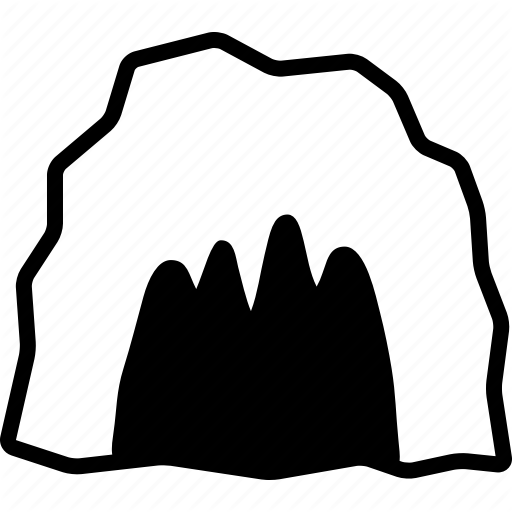

<ion-header>
  <ion-toolbar>
    <ion-buttons slot="primary">
      <ion-button (click)="showProfilePopover($event)">
        <ion-icon slot="icon-only" name="contact"></ion-icon>
      </ion-button>
    </ion-buttons>
    <ion-title href="/home">
      
      <span>Relian Den</span>
    </ion-title>
  </ion-toolbar>
</ion-header>

<ion-content>
  <div class="home-container">
    <den-favorites-list [ngClass]="{'active': tabs[0].active}"></den-favorites-list>
    <den-page
      [ngClass]="{'active': tabs[1].active}"
      [page]="historyService.currentPage">
    </den-page>
    <den-activity-list [ngClass]="{'active': tabs[2].active}"></den-activity-list>

    <div class="ion-tabs">
      <ion-tab-bar slot="bottom">
        <ion-tab-button *ngFor="let tab of tabs" [ngClass]="{'active': tab.active}" (click)="selectTab(tab)">
          <ion-label>{{ tab.title }}</ion-label>
          <ion-icon [name]="tab.icon"></ion-icon>
        </ion-tab-button>
      </ion-tab-bar>
    </div>
  </div>

  <!-- fab placed to the bottom end -->
  <ion-fab vertical="bottom" horizontal="end" slot="fixed">
    <ion-fab-button (click)="openAddModal()">
      <ion-icon name="md-add"></ion-icon>
    </ion-fab-button>
  </ion-fab>
</ion-content>
